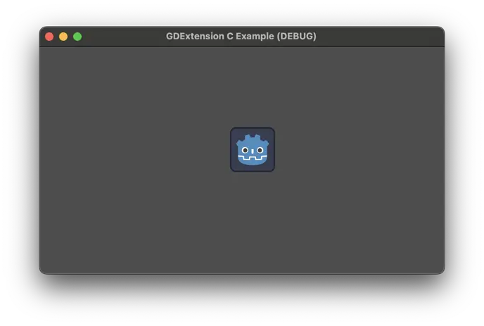
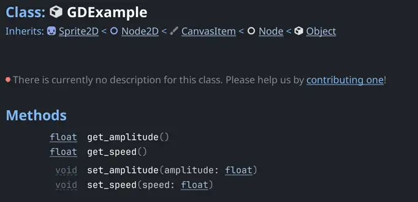
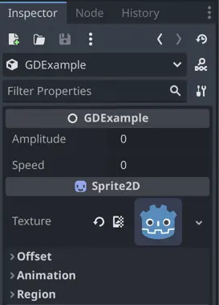
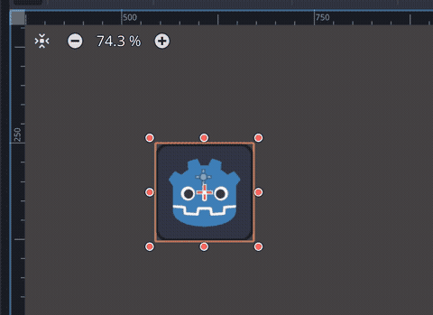
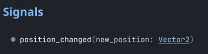
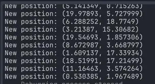

Ví dụ GDExtension bằng C
Giới thiệu
Đây là một ví dụ đơn giản về cách làm việc trực tiếp với GDExtension bằng mã C. Lưu ý rằng API này không được thiết kế để dùng trực tiếp, nên chắc chắn mã sẽ khá dài dòng và cần nhiều bước ngay cả với một ví dụ nhỏ. Tuy nhiên, nó là tài liệu tham khảo cho việc tạo binding cho một ngôn ngữ khác. Bạn vẫn có thể dùng API trực tiếp nếu muốn, điều này có thể tiện lợi khi chỉ cần liên kết một thư viện bên thứ ba.
Trong ví dụ này, chúng ta sẽ tạo một node tùy chỉnh di chuyển một sprite trên màn hình dựa trên các tham số của người dùng. Dù rất đơn giản, nó cho thấy cách làm một số việc với GDExtension, như đăng ký các lớp tùy chỉnh cùng phương thức, thuộc tính và signal. Nó giúp bạn hiểu sâu hơn về API GDExtension.
Thiết lập dự án
Bạn cần một vài điều kiện tiên quyết:
một file thực thi Godot 4.2 (hoặc mới hơn),
một trình biên dịch C,
SCons làm công cụ build.
Vì ví dụ này dùng API trực tiếp, không cần dùng repository godot-cpp.
Cấu trúc file
Để tổ chức các file, chúng ta sẽ chia chủ yếu thành hai thư mục:
gdextension_c_example/
|
+--project/ # game example/demo to test the extension
|
+--src/ # source code of the extension we are building
Chúng ta cũng cần một bản sao header gdextension_interface.h từ mã nguồn Godot, có thể lấy trực tiếp từ file thực thi Godot bằng cách chạy lệnh sau:
godot --dump-gdextension-interface
Lệnh này tạo header trong thư mục hiện tại, nên bạn chỉ cần sao chép nó vào thư mục src trong dự án ví dụ.
Cuối cùng, còn một nguồn thông tin khác mà chúng ta cần tham khảo, đó là file JSON chứa tài liệu tham khảo API của Godot. File này sẽ không được mã dùng trực tiếp, chúng ta chỉ dùng nó để trích xuất thủ công một số thông tin.
Để lấy file JSON này, chỉ cần gọi file thực thi Godot:
godot --dump-extension-api
File extension_api.json kết quả sẽ được tạo trong thư mục hiện tại. Bạn có thể sao chép file này vào thư mục ví dụ để tiện tra cứu.
Ghi chú
Extension này nhắm tới Godot 4.2, nhưng cũng sẽ hoạt động trên các phiên bản mới hơn. Nếu bạn muốn nhắm tới một phiên bản tối thiểu khác, hãy đảm bảo lấy header và file JSON từ đúng phiên bản Godot bạn đang nhắm tới.
Hệ thống build
Dùng một hệ thống build giúp cuộc sống dễ dàng hơn nhiều khi làm việc với mã C. Để tiện lợi, chúng ta sẽ dùng SCons vì đó cũng là thứ chính Godot sử dụng.
File SConstruct sau là một file đơn giản sẽ build extension của bạn cho nền tảng hiện tại bạn đang dùng, dù là Linux, macOS hay Windows. Đây sẽ là bản build không tối ưu, dùng cho mục đích debug. Nó cũng giả định bản build 64-bit, điều này liên quan đến một số phần của mã ví dụ. Việc tạo các kiểu build khác và biên dịch chéo nằm ngoài phạm vi của bài hướng dẫn này. Hãy lưu file này vào thư mục gốc.
#!/bin/env python
from SCons.Script import Environment
from os import path
import sys
env = Environment()
# Set the target path and name.
target_path = "project/bin/"
target_name = "libgdexample"
# Set the compiler and flags.
env.Append(CPPPATH=["src"]) # Add the src folder to the include path.
env.Append(CFLAGS=["-O0", "-g"]) # Make it a debug build.
# Use Clang on macOS.
if sys.platform == "darwin":
env["CC"] = "clang"
# Add all C files in "src" folder as sources.
sources = env.Glob("src/*.c")
# Create a shared library.
library = env.SharedLibrary(
target=path.join(target_path, target_name),
source=sources,
)
# Set the library as the default target.
env.Default(library)
File này sẽ bao gồm tất cả các file C trong thư mục src, nên chúng ta không cần sửa file này khi thêm file nguồn mới.
Khởi tạo extension
Phần mã đầu tiên sẽ chịu trách nhiệm khởi tạo extension. Đây là thứ giúp Godot biết GDExtension của chúng ta cung cấp những gì, chẳng hạn các lớp và plugin.
Tạo file init.h trong thư mục src với nội dung sau:
#pragma once
#include "defs.h"
#include "gdextension_interface.h"
void initialize_gdexample_module(void *p_userdata, GDExtensionInitializationLevel p_level);
void deinitialize_gdexample_module(void *p_userdata, GDExtensionInitializationLevel p_level);
GDExtensionBool GDE_EXPORT gdexample_library_init(GDExtensionInterfaceGetProcAddress p_get_proc_address, GDExtensionClassLibraryPtr p_library, GDExtensionInitialization *r_initialization);
Các hàm được khai báo ở đây có chữ ký (signature) mà API GDExtension mong đợi.
Hãy chú ý việc include file defs.h. Đây là một trong các helper giúp đơn giản hóa việc viết mã extension. Hiện tại nó chỉ chứa định nghĩa của GDE_EXPORT, một macro giúp hàm trở thành public trong thư viện chia sẻ để Godot có thể gọi đúng cách. Macro này giúp trừu tượng hóa những gì mỗi trình biên dịch mong đợi.
Tạo file defs.h trong thư mục src với nội dung sau:
#pragma once
#include <stdbool.h>
#include <stddef.h>
#include <stdint.h>
#if !defined(GDE_EXPORT)
#if defined(_WIN32)
#define GDE_EXPORT __declspec(dllexport)
#elif defined(__GNUC__)
#define GDE_EXPORT __attribute__((visibility("default")))
#else
#define GDE_EXPORT
#endif
#endif // ! GDE_EXPORT
Chúng ta cũng include một số header chuẩn để mọi thứ dễ dàng hơn. Giờ chỉ cần include defs.h là các header đó cũng đi kèm theo.
Bây giờ, hãy hiện thực các hàm vừa khai báo. Tạo một file tên init.c trong thư mục src và thêm đoạn mã này:
#include "init.h"
void initialize_gdexample_module(void *p_userdata, GDExtensionInitializationLevel p_level)
{
}
void deinitialize_gdexample_module(void *p_userdata, GDExtensionInitializationLevel p_level)
{
}
GDExtensionBool GDE_EXPORT gdexample_library_init(GDExtensionInterfaceGetProcAddress p_get_proc_address, GDExtensionClassLibraryPtr p_library, GDExtensionInitialization *r_initialization)
{
r_initialization->initialize = initialize_gdexample_module;
r_initialization->deinitialize = deinitialize_gdexample_module;
r_initialization->userdata = NULL;
r_initialization->minimum_initialization_level = GDEXTENSION_INITIALIZATION_SCENE;
return true;
}
Đoạn mã này thiết lập dữ liệu khởi tạo mà Godot mong đợi. Các hàm khởi tạo và hủy khởi tạo được thiết lập để Godot gọi chúng khi cần. Nó cũng đặt cấp độ khởi tạo, vốn khác nhau tùy từng extension. Vì chúng ta định thêm một node tùy chỉnh, cấp độ SCENE là đủ.
Chúng ta sẽ điền nội dung cho hàm initialize_gdexample_module() sau để đăng ký lớp tùy chỉnh.
Một lớp cơ bản
Để tạo một node thực sự, trước tiên chúng ta sẽ tạo một struct C để chứa dữ liệu và các hàm đóng vai trò phương thức. Dự định là biến nó thành một node tùy chỉnh kế thừa từ Sprite2D.
Tạo một file tên gdexample.h trong thư mục src với nội dung sau:
#pragma once
#include "gdextension_interface.h"
#include "defs.h"
// Struct to hold the node data.
typedef struct
{
// Metadata.
GDExtensionObjectPtr object; // Stores the underlying Godot object.
} GDExample;
// Constructor for the node.
void gdexample_class_constructor(GDExample *self);
// Destructor for the node.
void gdexample_class_destructor(GDExample *self);
// Bindings.
void gdexample_class_bind_methods();
Điểm đáng chú ý ở đây là trường object, chứa con trỏ tới đối tượng Godot, và hàm gdexample_class_bind_methods(), hàm này sẽ đăng ký metadata của lớp tùy chỉnh (thuộc tính, phương thức và signal). Hàm sau không hoàn toàn cần thiết, vì chúng ta có thể làm việc đó khi đăng ký lớp, nhưng nó giúp tách bạch các mối quan tâm rõ ràng hơn và để lớp tự đăng ký metadata của chính nó.
Trường object là cần thiết vì lớp của chúng ta sẽ kế thừa một lớp Godot. Vì không thể kế thừa trực tiếp, do chúng ta không tương tác với mã nguồn (và C thậm chí không có lớp), thay vào đó chúng ta yêu cầu Godot tạo một đối tượng thuộc kiểu mà nó biết và gắn extension của chúng ta vào đó. Chẳng hạn, chúng ta sẽ cần tham chiếu tới các đối tượng như vậy khi gọi phương thức trên lớp cha.
Hãy tạo file nguồn tương ứng với header này. Tạo file gdexample.c trong thư mục src và thêm đoạn mã sau vào:
#include "gdexample.h"
void gdexample_class_constructor(GDExample *self)
{
}
void gdexample_class_destructor(GDExample *self)
{
}
void gdexample_class_bind_methods()
{
}
Vì hiện chưa có việc gì để làm với các hàm đó, chúng sẽ tạm để trống một thời gian.
Bước tiếp theo là đăng ký lớp. Tuy nhiên, để làm vậy chúng ta cần tạo một StringName và để làm điều đó, ta phải lấy một hàm từ API GDExtension. Vì sẽ cần việc này vài lần và cũng cần những thứ khác, hãy tạo một wrapper API để thuận tiện cho những việc lặt vặt kiểu này.
Một wrapper API
Chúng ta sẽ bắt đầu bằng việc tạo file api.h trong thư mục src:
#pragma once
/*
This file works as a collection of helpers to call the GDExtension API
in a less verbose way, as well as a cache for methods from the discovery API,
just so we don't have to keep loading the same methods again.
*/
#include "gdextension_interface.h"
#include "defs.h"
extern GDExtensionClassLibraryPtr class_library;
// API methods.
extern struct Constructors
{
GDExtensionInterfaceStringNameNewWithLatin1Chars string_name_new_with_latin1_chars;
} constructors;
extern struct Destructors
{
GDExtensionPtrDestructor string_name_destructor;
} destructors;
extern struct API
{
GDExtensionInterfaceClassdbRegisterExtensionClass2 classdb_register_extension_class2;
} api;
void load_api(GDExtensionInterfaceGetProcAddress p_get_proc_address);
File này sẽ chứa nhiều helper khác khi chúng ta bổ sung những thứ hữu ích cho extension. Hiện tại nó chỉ có một con trỏ tới hàm tạo StringName từ chuỗi C (mã hóa Latin-1) và một con trỏ khác để hủy StringName, thứ chúng ta cần dùng để tránh rò rỉ bộ nhớ, cùng với hàm đăng ký lớp, vốn là mục tiêu ban đầu của chúng ta.
Chúng ta cũng giữ một tham chiếu tới class_library ở đây. Đây là thứ Godot cung cấp cho chúng ta khi khởi tạo extension, và ta sẽ cần dùng nó khi đăng ký những thứ mình tạo để Godot biết extension nào đang thực hiện lời gọi.
Ngoài ra còn có một hàm để tải các con trỏ hàm đó từ API GDExtension.
Hãy làm phần file nguồn tương ứng với header này. Tạo file api.c trong thư mục src, thêm đoạn mã sau:
#include "api.h"
GDExtensionClassLibraryPtr class_library = NULL;
struct Constructors constructors;
struct Destructors destructors;
struct API api;
void load_api(GDExtensionInterfaceGetProcAddress p_get_proc_address)
{
// Get helper functions first.
GDExtensionInterfaceVariantGetPtrDestructor variant_get_ptr_destructor = (GDExtensionInterfaceVariantGetPtrDestructor)p_get_proc_address("variant_get_ptr_destructor");
// API.
api.classdb_register_extension_class2 = (GDExtensionInterfaceClassdbRegisterExtensionClass2)p_get_proc_address("classdb_register_extension_class2");
// Constructors.
constructors.string_name_new_with_latin1_chars = (GDExtensionInterfaceStringNameNewWithLatin1Chars)p_get_proc_address("string_name_new_with_latin1_chars");
// Destructors.
destructors.string_name_destructor = variant_get_ptr_destructor(GDEXTENSION_VARIANT_TYPE_STRING_NAME);
}
Điều quan trọng đầu tiên ở đây là p_get_proc_address. Đây là một hàm từ API GDExtension được truyền vào lúc khởi tạo. Bạn có thể dùng hàm này để yêu cầu các hàm cụ thể từ API theo tên của chúng. Ở đây chúng ta cache kết quả để không phải giữ tham chiếu tới p_get_proc_address ở khắp nơi mà dùng wrapper của mình thay thế.
Đầu tiên, chúng ta yêu cầu hàm variant_get_ptr_destructor(). Hàm này sẽ không được dùng bên ngoài hàm này, nên ta không thêm nó vào wrapper mà chỉ cache cục bộ. Phép ép kiểu là cần thiết để tắt cảnh báo của trình biên dịch.
Sau đó, chúng ta lấy hàm tạo StringName từ chuỗi C, đúng là hàm cần thiết đã đề cập trước đó. Ta lưu nó trong struct constructors.
Tiếp theo, chúng ta dùng hàm variant_get_ptr_destructor() vừa lấy được để truy vấn destructor của StringName, truyền vào giá trị enum từ API gdextension_interface.h làm tham số. Ta có thể lấy destructor cho các kiểu khác theo cách tương tự, nhưng ở đây chỉ giới hạn ở những gì cần cho ví dụ.
Cuối cùng, chúng ta lấy hàm classdb_register_extension_class2(), hàm cần thiết để đăng ký lớp tùy chỉnh của mình.
Ghi chú
Bạn có thể thắc mắc vì sao lại có số 2 trong tên hàm. Điều này có nghĩa đây là phiên bản thứ hai của hàm. Phiên bản cũ được giữ lại để đảm bảo tương thích ngược với các extension cũ hơn, nhưng vì đã có phiên bản thứ hai nên tốt nhất là dùng bản mới, bởi ví dụ này không định hỗ trợ các phiên bản Godot cũ.
Header gdextension_interface.h có ghi rõ mỗi hàm được giới thiệu từ phiên bản Godot nào.
Chúng ta cũng định nghĩa biến class_library ở đây, biến này sẽ được gán trong quá trình khởi tạo.
Nhân tiện nói về khởi tạo, giờ chúng ta phải sửa file init.c để điền vào những thứ vừa thêm:
GDExtensionBool GDE_EXPORT gdexample_library_init(GDExtensionInterfaceGetProcAddress p_get_proc_address, GDExtensionClassLibraryPtr p_library, GDExtensionInitialization *r_initialization)
{
class_library = p_library;
load_api(p_get_proc_address);
...
Ở đây chúng ta gán class_library như cần thiết và gọi hàm load_api() mới. Đừng quên include các header mới ở đầu file này:
#include "init.h"
#include "api.h"
#include "gdexample.h"
...
Nhân tiện đang ở đây, chúng ta có thể đăng ký lớp tùy chỉnh mới. Hãy điền vào hàm initialize_gdexample_module():
void initialize_gdexample_module(void *p_userdata, GDExtensionInitializationLevel p_level)
{
if (p_level != GDEXTENSION_INITIALIZATION_SCENE)
{
return;
}
// Register class.
StringName class_name;
constructors.string_name_new_with_latin1_chars(&class_name, "GDExample", false);
StringName parent_class_name;
constructors.string_name_new_with_latin1_chars(&parent_class_name, "Sprite2D", false);
GDExtensionClassCreationInfo2 class_info = {
.is_virtual = false,
.is_abstract = false,
.is_exposed = true,
.set_func = NULL,
.get_func = NULL,
.get_property_list_func = NULL,
.free_property_list_func = NULL,
.property_can_revert_func = NULL,
.property_get_revert_func = NULL,
.validate_property_func = NULL,
.notification_func = NULL,
.to_string_func = NULL,
.reference_func = NULL,
.unreference_func = NULL,
.create_instance_func = gdexample_class_create_instance,
.free_instance_func = gdexample_class_free_instance,
.recreate_instance_func = NULL,
.get_virtual_func = NULL,
.get_virtual_call_data_func = NULL,
.call_virtual_with_data_func = NULL,
.get_rid_func = NULL,
.class_userdata = NULL,
};
api.classdb_register_extension_class2(class_library, &class_name, &parent_class_name, &class_info);
// Bind methods.
gdexample_class_bind_methods();
// Destruct things.
destructors.string_name_destructor(&class_name);
destructors.string_name_destructor(&parent_class_name);
}
Struct chứa thông tin lớp là phần lớn nhất ở đây. Không trường nào của nó là bắt buộc, ngoại trừ create_instance_func và free_instance_func. Chúng ta chưa viết các hàm đó nên sẽ sớm phải làm. Lưu ý rằng ta bỏ qua việc khởi tạo nếu không ở cấp SCENE. Hàm này có thể được gọi nhiều lần, mỗi lần cho một cấp, nhưng ta chỉ muốn đăng ký lớp một lần.
Thứ chưa được định nghĩa còn lại ở đây là StringName. Đây sẽ là một struct opaque dùng để giữ dữ liệu của một StringName Godot trong extension của chúng ta. Ta sẽ định nghĩa nó trong file có cái tên rất hợp lý là defs.h:
...
// The sizes can be obtained from the extension_api.json file.
#ifdef BUILD_32
#define STRING_NAME_SIZE 4
#else
#define STRING_NAME_SIZE 8
#endif
// Types.
typedef struct
{
uint8_t data[STRING_NAME_SIZE];
} StringName;
Như đã ghi trong comment, kích thước có thể tìm thấy trong file extension_api.json mà ta đã tạo trước đó, dưới thuộc tính builtin_class_sizes. BUILD_32 không bao giờ được định nghĩa vì ở đây ta giả định đang làm việc với bản build 64-bit của Godot, nhưng nếu cần, bạn có thể thêm env.Append(CPPDEFINES=["BUILD_32"]) vào file SConstruct.
Comment // Types. báo trước rằng ta sẽ thêm nhiều kiểu hơn vào file này. Hãy để việc đó cho sau.
Struct StringName ở đây chỉ để giữ dữ liệu của Godot, nên ta không thực sự quan tâm bên trong nó có gì. Dù vậy, trong trường hợp này nó chỉ là một con trỏ tới dữ liệu trên heap. Ta sẽ dùng struct này khi cần tự cấp phát dữ liệu cho một StringName, như khi đăng ký lớp.
Quay lại việc đăng ký, ta cần viết các hàm create và free. Hãy đưa chúng vào gdexample.h vì chúng dành riêng cho lớp tùy chỉnh:
...
// Bindings.
void gdexample_class_bind_methods();
GDExtensionObjectPtr gdexample_class_create_instance(void *p_class_userdata);
void gdexample_class_free_instance(void *p_class_userdata, GDExtensionClassInstancePtr p_instance);
...
Trước khi có thể cài đặt các hàm đó, ta cần thêm vài thứ vào API. Ta cần cách để cấp phát và giải phóng bộ nhớ. Dù có thể làm điều này với malloc() quen thuộc, ta có thể dùng các hàm quản lý bộ nhớ của Godot thay thế. Ta cũng cần cách để tạo một đối tượng Godot và gán instance tùy chỉnh của mình cho nó.
Vậy hãy sửa api.h để bổ sung các hàm mới này:
...
extern struct API
{
GDExtensionInterfaceClassdbRegisterExtensionClass2 classdb_register_extension_class2;
GDExtensionInterfaceClassdbConstructObject classdb_construct_object;
GDExtensionInterfaceObjectSetInstance object_set_instance;
GDExtensionInterfaceObjectSetInstanceBinding object_set_instance_binding;
GDExtensionInterfaceMemAlloc mem_alloc;
GDExtensionInterfaceMemFree mem_free;
} api;
Sau đó ta sửa hàm load_api() trong api.c để lấy các hàm mới này:
...
void load_api(GDExtensionInterfaceGetProcAddress p_get_proc_address)
{
...
// API.
api.classdb_register_extension_class2 = p_get_proc_address("classdb_register_extension_class2");
api.classdb_construct_object = (GDExtensionInterfaceClassdbConstructObject)p_get_proc_address("classdb_construct_object");
api.object_set_instance = (GDExtensionInterfaceObjectSetInstance)p_get_proc_address("object_set_instance");
api.object_set_instance_binding = (GDExtensionInterfaceObjectSetInstanceBinding)p_get_proc_address("object_set_instance_binding");
api.mem_alloc = (GDExtensionInterfaceMemAlloc)p_get_proc_address("mem_alloc");
api.mem_free = (GDExtensionInterfaceMemFree)p_get_proc_address("mem_free");
}
Giờ ta có thể quay lại gdexample.c và định nghĩa các hàm mới, đừng quên include header api.h:
#include "gdexample.h"
#include "api.h"
...
const GDExtensionInstanceBindingCallbacks gdexample_class_binding_callbacks = {
.create_callback = NULL,
.free_callback = NULL,
.reference_callback = NULL,
};
GDExtensionObjectPtr gdexample_class_create_instance(void *p_class_userdata)
{
// Create native Godot object;
StringName class_name;
constructors.string_name_new_with_latin1_chars(&class_name, "Sprite2D", false);
GDExtensionObjectPtr object = api.classdb_construct_object(&class_name);
destructors.string_name_destructor(&class_name);
// Create extension object.
GDExample *self = (GDExample *)api.mem_alloc(sizeof(GDExample));
gdexample_class_constructor(self);
self->object = object;
// Set the extension instance in the native Godot object.
constructors.string_name_new_with_latin1_chars(&class_name, "GDExample", false);
api.object_set_instance(object, &class_name, self);
api.object_set_instance_binding(object, class_library, self, &gdexample_class_binding_callbacks);
destructors.string_name_destructor(&class_name);
return object;
}
void gdexample_class_free_instance(void *p_class_userdata, GDExtensionClassInstancePtr p_instance)
{
if (p_instance == NULL)
{
return;
}
GDExample *self = (GDExample *)p_instance;
gdexample_class_destructor(self);
api.mem_free(self);
}
Khi tạo instance một đối tượng, trước tiên ta tạo một đối tượng Sprite2D mới, vì đó là lớp cha của lớp chúng ta. Sau đó ta cấp phát bộ nhớ cho struct tùy chỉnh và gọi constructor của nó. Ta cũng lưu con trỏ tới đối tượng Godot vào struct như đã đề cập trước đó.
Sau đó ta gán struct tùy chỉnh làm dữ liệu instance. Việc này cho Godot biết đối tượng là một instance của lớp tùy chỉnh và gọi đúng các phương thức tùy chỉnh cho instance đó, đồng thời truyền lại dữ liệu này.
Lưu ý rằng ta trả về đối tượng Godot đã tạo, không phải struct tùy chỉnh.
Với hàm gdextension_free_instance(), ta chỉ gọi destructor và giải phóng bộ nhớ đã cấp phát cho dữ liệu tùy chỉnh. Không cần hủy đối tượng Godot vì engine sẽ tự lo việc đó.
Một dự án demo
Giờ đã có thể tạo và giải phóng đối tượng tùy chỉnh, ta có thể thử nó trong một dự án thực tế. Để làm vậy, bạn cần mở Godot và tạo dự án mới trong thư mục project. Project manager có thể cảnh báo thư mục không trống nếu bạn đã biên dịch extension trước đó; lần này bạn có thể yên tâm bỏ qua cảnh báo.
Nếu chưa biên dịch extension, đây là lúc làm việc đó. Hãy mở terminal hoặc command prompt, di chuyển tới thư mục gốc của extension và chạy scons. Quá trình biên dịch sẽ nhanh vì extension rất đơn giản.
Sau đó, tạo file tên gdexample.gdextension bên trong thư mục project. Đây là một resource Godot mô tả extension, cho phép engine load nó đúng cách. Đặt nội dung sau vào file này:
[configuration]
entry_symbol = "gdexample_library_init"
compatibility_minimum = "4.2"
[libraries]
macos.debug = "res://bin/libgdexample.dylib"
linux.debug = "res://bin/libgdexample.so"
windows.debug = "res://bin/libgdexample.dll"
Như bạn thấy, gdexample_library_init() trùng tên với hàm ta đã định nghĩa trong file init.c. Tên phải khớp nhau vì đó là cách Godot gọi entry point của extension.
Ta cũng đặt phiên bản tương thích tối thiểu là 4.2, vì đang nhắm tới phiên bản này. Nó vẫn sẽ chạy trên các phiên bản sau. Nếu bạn dùng phiên bản Godot mới hơn và dựa vào các tính năng mới, bạn cần tăng giá trị này lên một phiên bản có đủ mọi thứ bạn dùng. Xem Khả năng tương thích phiên bản để biết thêm thông tin.
Trong mục [libraries], ta thiết lập đường dẫn tới thư viện dùng chung trên các nền tảng khác nhau. Ở đây chỉ có các phiên bản debug vì đó là thứ ta đang làm cho ví dụ. Bằng feature tag, bạn có thể tinh chỉnh để cung cấp thêm các phiên bản release, thêm hệ điều hành đích, cũng như cung cấp binary 32-bit và 64-bit.
Bạn cũng có thể thêm các thư viện phụ thuộc và icon tùy chỉnh cho các lớp trong file này, nhưng điều đó nằm ngoài phạm vi bài hướng dẫn này.
Sau khi lưu file, quay lại trình chỉnh sửa. Godot sẽ tự động load extension. Bạn sẽ chưa thấy gì vì extension chỉ đăng ký một lớp mới. Để dùng lớp này, hãy thêm một Node2D làm gốc của scene. Di chuyển nó vào giữa viewport để dễ nhìn hơn. Sau đó thêm một node con mới vào node gốc và trong hộp thoại Create New Node, tìm "GDExample", tên lớp của chúng ta, vì nó sẽ được liệt kê ở đó. Nếu không thấy, nghĩa là Godot chưa load extension đúng cách; hãy thử khởi động lại trình chỉnh sửa và rà lại các bước xem có thiếu gì không.
Lớp tùy chỉnh của chúng ta kế thừa từ Sprite2D, nên nó có thuộc tính Texture trong Inspector. Hãy gán thuộc tính này bằng file icon.svg mà Godot đã tiện tay tạo khi tạo dự án. Lưu scene này thành main.tscn và chạy nó. Để tiện, bạn có thể đặt nó làm main scene.

Xong! Ta đã có một node tùy chỉnh chạy trong Godot. Tuy nhiên, nó chưa làm gì cả và không khác gì một node Sprite2D thông thường. Ta sẽ khắc phục điều này tiếp theo bằng cách thêm các phương thức và thuộc tính tùy chỉnh.
Phương thức tùy chỉnh
Một việc phổ biến trong extension là tạo phương thức cho các lớp tùy chỉnh và expose chúng ra API Godot. Ta sẽ tạo vài getter và setter, cần thiết để bind các thuộc tính sau này.
Trước tiên, hãy thêm các trường mới vào struct để giữ giá trị amplitude và speed, mà ta sẽ dùng sau khi tạo hành vi cho node. Thêm chúng vào file gdexample.h, sửa struct GDExample:
...
typedef struct
{
// Public properties.
double amplitude;
double speed;
// Metadata.
GDExtensionObjectPtr object; // Stores the underlying Godot object.
} GDExample;
...
Trong cùng file, thêm khai báo cho các getter và setter, ngay sau destructor.
...
// Destructor for the node.
void gdexample_class_destructor(GDExample *self);
// Properties.
void gdexample_class_set_amplitude(GDExample *self, double amplitude);
double gdexample_class_get_amplitude(const GDExample *self);
void gdexample_class_set_speed(GDExample *self, double speed);
double gdexample_class_get_speed(const GDExample *self);
...
Trong file gdexample.c, ta sẽ khởi tạo các giá trị này trong constructor và thêm phần cài đặt cho các hàm mới, vốn khá đơn giản:
void gdexample_class_constructor(GDExample *self)
{
self->amplitude = 10.0;
self->speed = 1.0;
}
void gdexample_class_set_amplitude(GDExample *self, double amplitude)
{
self->amplitude = amplitude;
}
double gdexample_class_get_amplitude(const GDExample *self)
{
return self->amplitude;
}
void gdexample_class_set_speed(GDExample *self, double speed)
{
self->speed = speed;
}
double gdexample_class_get_speed(const GDExample *self)
{
return self->speed;
}
Để các hàm đơn giản này hoạt động khi được Godot gọi, ta cần vài wrapper giúp chuyển đổi dữ liệu qua lại với engine đúng cách.
Trước tiên, ta sẽ tạo wrapper cho ptrcall. Đây là thứ Godot dùng khi kiểu của các giá trị đã biết chính xác, nhờ đó tránh phải dùng Variant. Ta cần hai wrapper: một cho các hàm không nhận đối số và trả về double (cho getter), và một cho các hàm nhận một đối số double và không trả về gì (cho setter).
Thêm các khai báo vào file api.h:
void ptrcall_0_args_ret_float(void *method_userdata, GDExtensionClassInstancePtr p_instance, const GDExtensionConstTypePtr *p_args, GDExtensionTypePtr r_ret);
void ptrcall_1_float_arg_no_ret(void *method_userdata, GDExtensionClassInstancePtr p_instance, const GDExtensionConstTypePtr *p_args, GDExtensionTypePtr r_ret);
Hai hàm này tuân theo kiểu GDExtensionClassMethodPtrCall, như được định nghĩa trong gdextension_interface.h. Ta dùng float trong tên vì trong Godot kiểu float có độ chính xác double, nên ta giữ quy ước này.
Sau đó ta cài đặt các hàm này trong file api.c:
void ptrcall_0_args_ret_float(void *method_userdata, GDExtensionClassInstancePtr p_instance, const GDExtensionConstTypePtr *p_args, GDExtensionTypePtr r_ret)
{
// Call the function.
double (*function)(void *) = method_userdata;
*((double *)r_ret) = function(p_instance);
}
void ptrcall_1_float_arg_no_ret(void *method_userdata, GDExtensionClassInstancePtr p_instance, const GDExtensionConstTypePtr *p_args, GDExtensionTypePtr r_ret)
{
// Call the function.
void (*function)(void *, double) = method_userdata;
function(p_instance, *((double *)p_args[0]));
}
Đối số method_userdata là một giá trị tùy chỉnh mà ta đưa cho Godot; trong trường hợp này ta sẽ đặt nó là con trỏ tới hàm mà ta muốn gọi. Vì vậy, trước tiên ta chuyển nó về kiểu hàm, rồi chỉ việc gọi nó, truyền đối số khi cần hoặc gán giá trị trả về.
Đối số p_instance chứa instance tùy chỉnh của lớp, thứ mà ta đã đưa vào bằng object_set_instance() khi tạo đối tượng.
p_args là một mảng đối số. Lưu ý mảng này chứa con trỏ tới các giá trị. Đó là lý do ta dereference nó khi truyền vào các hàm. Số lượng đối số sẽ được khai báo khi bind hàm (việc ta sẽ làm ngay sau đây) và luôn bao gồm cả các đối số mặc định nếu có.
Cuối cùng, r_ret là con trỏ tới biến cần gán giá trị trả về. Giống như các đối số, nó sẽ có đúng kiểu đã khai báo. Với hàm không trả về, ta phải tránh gán nó.
Lưu ý kiểu và số lượng đối số là chính xác, nên ví dụ nếu cần các kiểu khác, ta sẽ phải tạo thêm wrapper. Việc này có thể tự động hóa bằng cách sinh code, nhưng nằm ngoài phạm vi bài hướng dẫn này.
Dù các hàm ptrcall được dùng khi kiểu là chính xác, đôi khi Godot không thể biết điều đó (khi lời gọi đến từ một ngôn ngữ kiểu động như GDScript). Trong các tình huống đó, nó dùng các hàm call thông thường, nên ta cũng cần cung cấp chúng khi bind.
Hãy tạo hai wrapper mới trong file api.h:
void call_0_args_ret_float(void *method_userdata, GDExtensionClassInstancePtr p_instance, const GDExtensionConstVariantPtr *p_args, GDExtensionInt p_argument_count, GDExtensionVariantPtr r_return, GDExtensionCallError *r_error);
void call_1_float_arg_no_ret(void *method_userdata, GDExtensionClassInstancePtr p_instance, const GDExtensionConstVariantPtr *p_args, GDExtensionInt p_argument_count, GDExtensionVariantPtr r_return, GDExtensionCallError *r_error);
Các hàm này tuân theo kiểu GDExtensionClassMethodCall, hơi khác một chút. Trước hết, bạn nhận con trỏ tới các Variant thay vì kiểu chính xác. Ngoài ra còn có số lượng đối số và một struct lỗi mà bạn có thể gán nếu có gì sai.
Để kiểm tra kiểu và trích xuất, tương tác với Variant, ta cần thêm vài hàm từ API GDExtension. Vậy hãy mở rộng các struct wrapper:
extern struct Constructors {
...
GDExtensionVariantFromTypeConstructorFunc variant_from_float_constructor;
GDExtensionTypeFromVariantConstructorFunc float_from_variant_constructor;
} constructors;
extern struct API
{
...
GDExtensionInterfaceGetVariantFromTypeConstructor get_variant_from_type_constructor;
GDExtensionInterfaceGetVariantToTypeConstructor get_variant_to_type_constructor;
GDExtensionInterfaceVariantGetType variant_get_type;
} api;
Tên gọi đã nói lên tất cả về chức năng của chúng. Ta có vài constructor để tạo và trích xuất giá trị số thực sang và từ Variant. Ta cũng có vài helper để thực sự lấy các constructor đó, cùng một hàm để xác định kiểu của một Variant.
Hãy lấy chúng từ API như đã làm trước đó, bằng cách sửa hàm load_api() trong file api.c:
void load_api(GDExtensionInterfaceGetProcAddress p_get_proc_address)
{
...
// API.
...
api.get_variant_from_type_constructor = (GDExtensionInterfaceGetVariantFromTypeConstructor)p_get_proc_address("get_variant_from_type_constructor");
api.get_variant_to_type_constructor = (GDExtensionInterfaceGetVariantToTypeConstructor)p_get_proc_address("get_variant_to_type_constructor");
api.variant_get_type = (GDExtensionInterfaceVariantGetType)p_get_proc_address("variant_get_type");
...
// Constructors.
...
constructors.variant_from_float_constructor = api.get_variant_from_type_constructor(GDEXTENSION_VARIANT_TYPE_FLOAT);
constructors.float_from_variant_constructor = api.get_variant_to_type_constructor(GDEXTENSION_VARIANT_TYPE_FLOAT);
...
}
Giờ đã thiết lập xong những thứ này, ta có thể cài đặt các call wrapper trong cùng file:
void call_0_args_ret_float(void *method_userdata, GDExtensionClassInstancePtr p_instance, const GDExtensionConstVariantPtr *p_args, GDExtensionInt p_argument_count, GDExtensionVariantPtr r_return, GDExtensionCallError *r_error)
{
// Check argument count.
if (p_argument_count != 0)
{
r_error->error = GDEXTENSION_CALL_ERROR_TOO_MANY_ARGUMENTS;
r_error->expected = 0;
return;
}
// Call the function.
double (*function)(void *) = method_userdata;
double result = function(p_instance);
// Set resulting Variant.
constructors.variant_from_float_constructor(r_return, &result);
}
void call_1_float_arg_no_ret(void *method_userdata, GDExtensionClassInstancePtr p_instance, const GDExtensionConstVariantPtr *p_args, GDExtensionInt p_argument_count, GDExtensionVariantPtr r_return, GDExtensionCallError *r_error)
{
// Check argument count.
if (p_argument_count < 1)
{
r_error->error = GDEXTENSION_CALL_ERROR_TOO_FEW_ARGUMENTS;
r_error->expected = 1;
return;
}
else if (p_argument_count > 1)
{
r_error->error = GDEXTENSION_CALL_ERROR_TOO_MANY_ARGUMENTS;
r_error->expected = 1;
return;
}
// Check the argument type.
GDExtensionVariantType type = api.variant_get_type(p_args[0]);
if (type != GDEXTENSION_VARIANT_TYPE_FLOAT)
{
r_error->error = GDEXTENSION_CALL_ERROR_INVALID_ARGUMENT;
r_error->expected = GDEXTENSION_VARIANT_TYPE_FLOAT;
r_error->argument = 0;
return;
}
// Extract the argument.
double arg1;
constructors.float_from_variant_constructor(&arg1, (GDExtensionVariantPtr)p_args[0]);
// Call the function.
void (*function)(void *, double) = method_userdata;
function(p_instance, arg1);
}
Các hàm này dài hơn một chút nhưng dễ theo dõi. Trước tiên chúng kiểm tra số lượng đối số có như mong đợi không; nếu không, chúng gán struct lỗi và return. Với hàm có một tham số, nó còn kiểm tra kiểu đối số có đúng không. Điều này quan trọng vì kiểu không khớp khi trích xuất từ Variant có thể gây crash.
Sau đó nó tiến hành trích xuất đối số bằng constructor đã thiết lập trước đó. Hàm không có đối số thì thay vào đó gán giá trị trả về sau khi gọi hàm. Lưu ý chúng dùng con trỏ tới một biến double, vì đó là thứ các constructor này mong đợi.
Trước khi thực sự bind các phương thức, ta cần cách tạo các instance GDExtensionPropertyInfo. Dù có thể tạo chúng bên trong các hàm bind sẽ viết sau, sẽ dễ hơn nếu có một helper vì ta cần nó nhiều lần, kể cả khi bind thuộc tính.
Hãy tạo hai hàm này trong file api.h:
// Create a PropertyInfo struct.
GDExtensionPropertyInfo make_property(
GDExtensionVariantType type,
const char *name);
GDExtensionPropertyInfo make_property_full(
GDExtensionVariantType type,
const char *name,
uint32_t hint,
const char *hint_string,
const char *class_name,
uint32_t usage_flags);
void destruct_property(GDExtensionPropertyInfo *info);
Hàm thứ nhất là phiên bản đơn giản hóa của hàm thứ hai, vì thường ta không cần mọi đối số cho thuộc tính và dùng giá trị mặc định là đủ. Ta cũng có một hàm để hủy PropertyInfo, vì ta cần tạo các String và StringName phải được giải phóng đúng cách.
Nhân tiện, ta cũng cần cách tạo và hủy String, nên sẽ bổ sung vào các struct có sẵn trong cùng file này. Ta cũng sẽ lấy một hàm API mới để thực sự bind phương thức tùy chỉnh.
extern struct Constructors
{
...
GDExtensionInterfaceStringNewWithUtf8Chars string_new_with_utf8_chars;
} constructors;
extern struct Destructors
{
...
GDExtensionPtrDestructor string_destructor;
} destructors;
extern struct API
{
...
GDExtensionInterfaceClassdbRegisterExtensionClassMethod classdb_register_extension_class_method;
} api;
Trước khi cài đặt chúng, hãy ghé nhanh file defs.h và thêm kích thước của kiểu String cùng vài enum:
// The sizes can be obtained from the extension_api.json file.
#ifdef BUILD_32
#define STRING_SIZE 4
#define STRING_NAME_SIZE 4
#else
#define STRING_SIZE 8
#define STRING_NAME_SIZE 8
#endif
...
typedef struct
{
uint8_t data[STRING_SIZE];
} String;
// Enums.
typedef enum
{
PROPERTY_HINT_NONE = 0,
} PropertyHint;
typedef enum
{
PROPERTY_USAGE_NONE = 0,
PROPERTY_USAGE_STORAGE = 2,
PROPERTY_USAGE_EDITOR = 4,
PROPERTY_USAGE_DEFAULT = PROPERTY_USAGE_STORAGE | PROPERTY_USAGE_EDITOR,
} PropertyUsageFlags;
Dù có cùng kích thước với StringName, dùng một tên khác cho nó sẽ rõ ràng hơn.
Các enum ở đây chỉ là helper để đặt tên cho các con số mà chúng đại diện. Thông tin về chúng có trong file extension_api.json. Ở đây ta chỉ thiết lập những enum cần cho bài hướng dẫn để giữ cho ngắn gọn.
Giờ sang api.c, ta cần load con trỏ tới các hàm mới đã thêm vào API.
void load_api(GDExtensionInterfaceGetProcAddress p_get_proc_address)
{
...
// API
...
api.classdb_register_extension_class_method = (GDExtensionInterfaceClassdbRegisterExtensionClassMethod)p_get_proc_address("classdb_register_extension_class_method");
// Constructors.
...
constructors.string_new_with_utf8_chars = (GDExtensionInterfaceStringNewWithUtf8Chars)p_get_proc_address("string_new_with_utf8_chars");
// Destructors.
...
destructors.string_destructor = variant_get_ptr_destructor(GDEXTENSION_VARIANT_TYPE_STRING);
}
Sau đó ta cũng có thể cài đặt các hàm tạo struct PropertyInfo.
GDExtensionPropertyInfo make_property(
GDExtensionVariantType type,
const char *name)
{
return make_property_full(type, name, PROPERTY_HINT_NONE, "", "", PROPERTY_USAGE_DEFAULT);
}
GDExtensionPropertyInfo make_property_full(
GDExtensionVariantType type,
const char *name,
uint32_t hint,
const char *hint_string,
const char *class_name,
uint32_t usage_flags)
{
StringName *prop_name = api.mem_alloc(sizeof(StringName));
constructors.string_name_new_with_latin1_chars(prop_name, name, false);
String *prop_hint_string = api.mem_alloc(sizeof(String));
constructors.string_new_with_utf8_chars(prop_hint_string, hint_string);
StringName *prop_class_name = api.mem_alloc(sizeof(StringName));
constructors.string_name_new_with_latin1_chars(prop_class_name, class_name, false);
GDExtensionPropertyInfo info = {
.name = prop_name,
.type = type,
.hint = hint,
.hint_string = prop_hint_string,
.class_name = prop_class_name,
.usage = usage_flags,
};
return info;
}
void destruct_property(GDExtensionPropertyInfo *info)
{
destructors.string_name_destructor(info->name);
destructors.string_destructor(info->hint_string);
destructors.string_name_destructor(info->class_name);
api.mem_free(info->name);
api.mem_free(info->hint_string);
api.mem_free(info->class_name);
}
Phiên bản đơn giản của make_property() chỉ gọi phiên bản đầy đủ hơn với vài đối số mặc định. Ý nghĩa chính xác của các giá trị đó nằm ngoài phạm vi bài hướng dẫn này; hãy xem trang về lớp Object để biết thêm chi tiết về việc bind phương thức và thuộc tính.
Phiên bản đầy đủ phức tạp hơn. Trước tiên, nó tạo các String và StringName cho những trường cần thiết, bằng cách cấp phát bộ nhớ và gọi constructor của chúng. Sau đó nó tạo một struct GDExtensionPropertyInfo và gán mọi trường bằng các đối số được cung cấp. Cuối cùng nó trả về struct vừa tạo.
Hàm destruct_property() khá đơn giản, nó chỉ gọi destructor cho các đối tượng đã tạo và giải phóng bộ nhớ đã cấp phát cho chúng.
Hãy quay lại header api.h một lần nữa để tạo các hàm thực sự bind phương thức:
// Version for 0 arguments, with return.
void bind_method_0_r(
const char *class_name,
const char *method_name,
void *function,
GDExtensionVariantType return_type);
// Version for 1 argument, no return.
void bind_method_1(
const char *class_name,
const char *method_name,
void *function,
const char *arg1_name,
GDExtensionVariantType arg1_type);
Sau đó chuyển lại file api.c để cài đặt chúng:
// Version for 0 arguments, with return.
void bind_method_0_r(
const char *class_name,
const char *method_name,
void *function,
GDExtensionVariantType return_type)
{
StringName method_name_string;
constructors.string_name_new_with_latin1_chars(&method_name_string, method_name, false);
GDExtensionClassMethodCall call_func = call_0_args_ret_float;
GDExtensionClassMethodPtrCall ptrcall_func = ptrcall_0_args_ret_float;
GDExtensionPropertyInfo return_info = make_property(return_type, "");
GDExtensionClassMethodInfo method_info = {
.name = &method_name_string,
.method_userdata = function,
.call_func = call_func,
.ptrcall_func = ptrcall_func,
.method_flags = GDEXTENSION_METHOD_FLAGS_DEFAULT,
.has_return_value = true,
.return_value_info = &return_info,
.return_value_metadata = GDEXTENSION_METHOD_ARGUMENT_METADATA_NONE,
.argument_count = 0,
};
StringName class_name_string;
constructors.string_name_new_with_latin1_chars(&class_name_string, class_name, false);
api.classdb_register_extension_class_method(class_library, &class_name_string, &method_info);
// Destruct things.
destructors.string_name_destructor(&method_name_string);
destructors.string_name_destructor(&class_name_string);
destruct_property(&return_info);
}
// Version for 1 argument, no return.
void bind_method_1(
const char *class_name,
const char *method_name,
void *function,
const char *arg1_name,
GDExtensionVariantType arg1_type)
{
StringName method_name_string;
constructors.string_name_new_with_latin1_chars(&method_name_string, method_name, false);
GDExtensionClassMethodCall call_func = call_1_float_arg_no_ret;
GDExtensionClassMethodPtrCall ptrcall_func = ptrcall_1_float_arg_no_ret;
GDExtensionPropertyInfo args_info[] = {
make_property(arg1_type, arg1_name),
};
GDExtensionClassMethodArgumentMetadata args_metadata[] = {
GDEXTENSION_METHOD_ARGUMENT_METADATA_NONE,
};
GDExtensionClassMethodInfo method_info = {
.name = &method_name_string,
.method_userdata = function,
.call_func = call_func,
.ptrcall_func = ptrcall_func,
.method_flags = GDEXTENSION_METHOD_FLAGS_DEFAULT,
.has_return_value = false,
.argument_count = 1,
.arguments_info = args_info,
.arguments_metadata = args_metadata,
};
StringName class_name_string;
constructors.string_name_new_with_latin1_chars(&class_name_string, class_name, false);
api.classdb_register_extension_class_method(class_library, &class_name_string, &method_info);
// Destruct things.
destructors.string_name_destructor(&method_name_string);
destructors.string_name_destructor(&class_name_string);
destruct_property(&args_info[0]);
}
Hai hàm rất giống nhau. Trước tiên, chúng tạo một StringName với tên phương thức. Nó được tạo trên stack vì ta không cần giữ nó sau khi hàm kết thúc. Sau đó chúng tạo các biến cục bộ để giữ call_func và ptrcall_func, trỏ tới các hàm helper đã định nghĩa trước đó.
Ở bước tiếp theo chúng hơi khác nhau. Hàm thứ nhất tạo một thuộc tính cho giá trị trả về, với tên rỗng vì không cần. Hàm còn lại tạo một mảng thuộc tính cho các đối số, trong trường hợp này chỉ có một phần tử. Hàm này còn có một mảng metadata, có thể dùng nếu đối số có gì đặc biệt (ví dụ nếu một giá trị int dài 32 bit thay vì 64 bit mặc định).
Sau đó, chúng tạo GDExtensionClassMethodInfo với các trường cần thiết cho mỗi trường hợp. Tiếp đó chúng tạo một StringName cho tên lớp, để gắn phương thức với lớp. Kế đến, chúng gọi hàm API để thực sự bind phương thức này vào lớp. Cuối cùng, ta hủy các đối tượng đã tạo vì không còn cần nữa.
Ghi chú
Các helper bind ở đây dùng các helper call đã tạo trước đó, nên lưu ý rằng các helper call đó chỉ chấp nhận kiểu FLOAT của Godot (tương đương double trong C). Nếu định dùng cho các kiểu khác, bạn cần kiểm tra kiểu của các đối số và kiểu trả về rồi chọn callback hàm phù hợp. Ở đây ta bỏ qua việc này chỉ để ví dụ không dài thêm nữa.
Giờ đã có phương tiện để bind phương thức, ta có thể thực sự làm vậy trong lớp tùy chỉnh. Mở file gdexample.c và điền vào hàm gdexample_class_bind_methods():
void gdexample_class_bind_methods()
{
bind_method_0_r("GDExample", "get_amplitude", gdexample_class_get_amplitude, GDEXTENSION_VARIANT_TYPE_FLOAT);
bind_method_1("GDExample", "set_amplitude", gdexample_class_set_amplitude, "amplitude", GDEXTENSION_VARIANT_TYPE_FLOAT);
bind_method_0_r("GDExample", "get_speed", gdexample_class_get_speed, GDEXTENSION_VARIANT_TYPE_FLOAT);
bind_method_1("GDExample", "set_speed", gdexample_class_set_speed, "speed", GDEXTENSION_VARIANT_TYPE_FLOAT);
}
Vì hàm này đã được gọi bởi quá trình khởi tạo, ta có thể dừng ở đây. Hàm này đơn giản hơn nhiều sau khi ta đã tạo toàn bộ hạ tầng để nó hoạt động. Bạn có thể thấy việc cài đặt các hàm bind trực tiếp ở đây sẽ tốn chỗ và khá lặp lại. Điều này cũng giúp việc thêm phương thức khác trong tương lai dễ dàng hơn.
Nếu bạn biên dịch code và mở lại dự án Godot, ban đầu sẽ không có gì khác, vì ta chỉ thêm hai phương thức mới. Để chắc chắn chúng được đăng ký đúng, bạn có thể tìm GDExample trong phần trợ giúp của trình chỉnh sửa và kiểm tra chúng có xuất hiện trong trang tài liệu không.

Thuộc tính tùy chỉnh
Vì đã bind sẵn getter và setter cho các thuộc tính, ta có thể tiếp tục tạo các thuộc tính thực sự sẽ hiển thị trong inspector của trình chỉnh sửa Godot.
Nhờ phần thiết lập kỹ lưỡng ở mục trước, chỉ cần vài thứ nữa là ta có thể bind thuộc tính. Trước tiên, hãy lấy một hàm API mới trong file api.h:
extern struct API {
...
GDExtensionInterfaceClassdbRegisterExtensionClassProperty classdb_register_extension_class_property;
} api;
Hãy khai báo thêm một hàm ở đây để bind thuộc tính:
void bind_property(
const char *class_name,
const char *name,
GDExtensionVariantType type,
const char *getter,
const char *setter);
Trong file api.c, ta có thể load hàm API mới:
void load_api(GDExtensionInterfaceGetProcAddress p_get_proc_address)
{
// API
...
api.classdb_register_extension_class_property = (GDExtensionInterfaceClassdbRegisterExtensionClassProperty)p_get_proc_address("classdb_register_extension_class_property");
...
}
Sau đó ta có thể cài đặt hàm helper mới trong cùng file này:
void bind_property(
const char *class_name,
const char *name,
GDExtensionVariantType type,
const char *getter,
const char *setter)
{
StringName class_string_name;
constructors.string_name_new_with_latin1_chars(&class_string_name, class_name, false);
GDExtensionPropertyInfo info = make_property(type, name);
StringName getter_name;
constructors.string_name_new_with_latin1_chars(&getter_name, getter, false);
StringName setter_name;
constructors.string_name_new_with_latin1_chars(&setter_name, setter, false);
api.classdb_register_extension_class_property(class_library, &class_string_name, &info, &setter_name, &getter_name);
// Destruct things.
destructors.string_name_destructor(&class_string_name);
destruct_property(&info);
destructors.string_name_destructor(&getter_name);
destructors.string_name_destructor(&setter_name);
}
Hàm này tương tự hàm bind phương thức. Khác biệt chính là ta không cần thêm struct nào vì có thể dùng luôn GDExtensionPropertyInfo được tạo bởi hàm helper, nên đơn giản hơn. Nó chỉ tạo các giá trị StringName từ chuỗi C, tạo struct property info bằng helper, gọi hàm API để đăng ký thuộc tính vào lớp rồi hủy mọi đối tượng đã tạo.
Xong việc này, ta có thể mở rộng hàm gdexample_class_bind_methods() trong file gdexample.c:
void gdexample_class_bind_methods()
{
bind_method_0_r("GDExample", "get_amplitude", gdexample_class_get_amplitude, GDEXTENSION_VARIANT_TYPE_FLOAT);
bind_method_1("GDExample", "set_amplitude", gdexample_class_set_amplitude, "amplitude", GDEXTENSION_VARIANT_TYPE_FLOAT);
bind_property("GDExample", "amplitude", GDEXTENSION_VARIANT_TYPE_FLOAT, "get_amplitude", "set_amplitude");
bind_method_0_r("GDExample", "get_speed", gdexample_class_get_speed, GDEXTENSION_VARIANT_TYPE_FLOAT);
bind_method_1("GDExample", "set_speed", gdexample_class_set_speed, "speed", GDEXTENSION_VARIANT_TYPE_FLOAT);
bind_property("GDExample", "speed", GDEXTENSION_VARIANT_TYPE_FLOAT, "get_speed", "set_speed");
}
Nếu build extension bằng scons, bạn sẽ thấy thuộc tính mới trong trình chỉnh sửa Godot, không chỉ trên trang tài liệu của lớp tùy chỉnh mà còn trong dock Inspector khi chọn node GDExample.

Bind phương thức ảo
Node tùy chỉnh giờ đã có thuộc tính để điều chỉnh cách nó hoạt động, nhưng nó vẫn chưa làm gì. Trong mục này, ta sẽ bind phương thức ảo _process() và khiến sprite tùy chỉnh di chuyển một chút.
Trong file gdexample.h, hãy thêm một hàm đại diện cho phương thức _process() tùy chỉnh:
// Methods.
void gdexample_class_process(GDExample *self, double delta);
Ta cũng sẽ thêm một trường "private" vào struct tùy chỉnh để theo dõi thời gian đã trôi qua. Nó "private" chỉ theo nghĩa sẽ không được bind vào API Godot, dù phía C nó là public, vì ngôn ngữ này không có access modifier.
typedef struct
{
// Private properties.
double time_passed;
...
} GDExample;
Ở file nguồn tương ứng gdexample.c, ta cần khởi tạo trường mới trong constructor:
void gdexample_class_constructor(GDExample *self)
{
self->time_passed = 0.0;
self->amplitude = 10.0;
self->speed = 1.0;
}
Sau đó ta có thể viết phần cài đặt đơn giản nhất cho phương thức _process:
void gdexample_class_process(GDExample *self, double delta)
{
self->time_passed += self->speed * delta;
}
Hiện tại nó chỉ cập nhật trường private đã tạo. Ta sẽ quay lại phần này sau khi phương thức được bind đúng cách.
Phương thức ảo hơi khác so với các binding thông thường. Thay vì đăng ký trực tiếp phương thức, ta sẽ đăng ký một hàm đặc biệt mà Godot sẽ gọi để hỏi xem một phương thức ảo cụ thể có được cài đặt trong extension hay không. Engine sẽ truyền một StringName làm đối số, nên theo đúng tinh thần của bài hướng dẫn, ta sẽ tạo một hàm helper để kiểm tra nó có bằng một chuỗi C hay không.
Hãy thêm khai báo vào file api.h:
// Compare a StringName with a C string.
bool is_string_name_equal(GDExtensionConstStringNamePtr p_a, const char *p_b);
Ta cũng sẽ thêm một struct mới vào file này để giữ con trỏ hàm cho các toán tử tùy chỉnh:
extern struct Operators
{
GDExtensionPtrOperatorEvaluator string_name_equal;
} operators;
Sau đó trong file api.c, ta sẽ load con trỏ hàm từ API:
struct Operators operators;
void load_api(GDExtensionInterfaceGetProcAddress p_get_proc_address)
{
// Get helper functions first.
...
GDExtensionInterfaceVariantGetPtrOperatorEvaluator variant_get_ptr_operator_evaluator = (GDExtensionInterfaceVariantGetPtrOperatorEvaluator)p_get_proc_address("variant_get_ptr_operator_evaluator");
...
// Operators.
operators.string_name_equal = variant_get_ptr_operator_evaluator(GDEXTENSION_VARIANT_OP_EQUAL, GDEXTENSION_VARIANT_TYPE_STRING_NAME, GDEXTENSION_VARIANT_TYPE_STRING_NAME);
}
Như bạn thấy, ta cần một helper cục bộ mới ở đây để lấy con trỏ hàm cho toán tử.
Có sẵn thứ này, ta có thể dễ dàng tạo hàm so sánh trong cùng file:
bool is_string_name_equal(GDExtensionConstStringNamePtr p_a, const char *p_b)
{
// Create a StringName for the C string.
StringName string_name;
constructors.string_name_new_with_latin1_chars(&string_name, p_b, false);
// Compare both StringNames.
bool is_equal = false;
operators.string_name_equal(p_a, &string_name, &is_equal);
// Destroy the created StringName.
destructors.string_name_destructor(&string_name);
// Return the result.
return is_equal;
}
Hàm này tạo một StringName từ đối số, so sánh với cái còn lại bằng con trỏ hàm toán tử và trả về kết quả. Lưu ý giá trị trả về của toán tử được truyền qua một tham chiếu đầu ra (out reference); đây là điều phổ biến trong API.
Hãy quay lại file gdexample.h và thêm vài hàm sẽ được dùng làm callback cho API Godot:
void *gdexample_class_get_virtual_with_data(void *p_class_userdata, GDExtensionConstStringNamePtr p_name);
void gdexample_class_call_virtual_with_data(GDExtensionClassInstancePtr p_instance, GDExtensionConstStringNamePtr p_name, void *p_virtual_call_userdata, const GDExtensionConstTypePtr *p_args, GDExtensionTypePtr r_ret);
Thực ra có hai cách đăng ký phương thức ảo. Chỉ một cách có phần get, trong đó bạn đưa cho Godot một con trỏ hàm được dựng đúng cách để nó gọi. Với cách này, ta sẽ cần tạo thêm một helper cho mỗi phương thức ảo, điều không mấy tiện lợi. Thay vào đó, ta dùng cách thứ hai, cho phép trả về dữ liệu bất kỳ, rồi Godot sẽ gọi một callback thứ hai và trả lại dữ liệu này cùng thông tin lời gọi. Ta chỉ cần đưa con trỏ hàm của mình làm dữ liệu tùy chỉnh và dùng một callback duy nhất cho mọi phương thức ảo. Dù trong ví dụ này ta chỉ dùng cho một phương thức, cách này dễ mở rộng hơn.
Vậy hãy cài đặt hai hàm đó trong file gdexample.c:
void *gdexample_class_get_virtual_with_data(void *p_class_userdata, GDExtensionConstStringNamePtr p_name)
{
// If it is the "_process" method, return a pointer to the gdexample_class_process function.
if (is_string_name_equal(p_name, "_process"))
{
return (void *)gdexample_class_process;
}
// Otherwise, return NULL.
return NULL;
}
void gdexample_class_call_virtual_with_data(GDExtensionClassInstancePtr p_instance, GDExtensionConstStringNamePtr p_name, void *p_virtual_call_userdata, const GDExtensionConstTypePtr *p_args, GDExtensionTypePtr r_ret)
{
// If it is the "_process" method, call it with a helper.
if (p_virtual_call_userdata == &gdexample_class_process)
{
ptrcall_1_float_arg_no_ret(p_virtual_call_userdata, p_instance, p_args, r_ret);
}
}
Các hàm này cũng khá đơn giản sau khi đã tạo đủ các helper trước đó.
Với hàm thứ nhất, ta chỉ kiểm tra tên hàm được yêu cầu có phải _process không; nếu đúng, ta trả về con trỏ hàm tới phần cài đặt của nó. Ngược lại, ta trả về NULL, báo hiệu phương thức không được override. Ta không dùng p_class_userdata ở đây vì hàm này chỉ dành cho một lớp và không có dữ liệu nào gắn với nó.
Hàm thứ hai tương tự. Nếu là phương thức _process(), nó dùng con trỏ hàm được cung cấp để gọi helper ptrcall, chuyển tiếp các đối số của lời gọi. Ngược lại, nó không làm gì, vì ta không cài đặt phương thức ảo nào khác.
Thứ duy nhất còn thiếu là dùng các callback này khi đăng ký lớp. Mở file init.c và sửa phần khởi tạo class_info để đưa chúng vào, thay cho giá trị NULL dùng trước đó:
void initialize_gdexample_module(void *p_userdata, GDExtensionInitializationLevel p_level)
{
...
GDExtensionClassCreationInfo2 class_info = {
...
.get_virtual_call_data_func = gdexample_class_get_virtual_with_data,
.call_virtual_with_data_func = gdexample_class_call_virtual_with_data,
...
};
...
}
Như vậy là đủ để bind phương thức ảo. Nếu build extension và chạy lại dự án Godot, hàm _process() sẽ được gọi. Chỉ là bạn chưa thể nhận ra vì bản thân hàm chưa làm gì có thể thấy được. Ta sẽ giải quyết ngay bằng cách khiến node tùy chỉnh di chuyển theo một quỹ đạo.
Để node làm được việc, ta cần gọi các phương thức của Godot. Không chỉ các hàm API GDExtension như đã làm đến giờ, mà cả các phương thức thực sự của engine, như khi viết script. Điều này đương nhiên đòi hỏi thêm chút thiết lập.
Trước tiên, hãy thêm class_Vector2 vào file defs.h để có thể dùng nó trong phương thức:
// The sizes can be obtained from the extension_api.json file.
...
#ifdef REAL_T_IS_DOUBLE
#define VECTOR2_SIZE 16
#else
#define VECTOR2_SIZE 8
#endif
...
// Types.
...
typedef struct
{
uint8_t data[VECTOR2_SIZE];
} Vector2;
Define REAL_T_IS_DOUBLE chỉ cần nếu phiên bản Godot của bạn được build với hỗ trợ độ chính xác double, vốn không phải mặc định.
Giờ, trong file api.h, ta sẽ thêm vài thứ vào các struct API, gồm một struct mới để giữ các phương thức engine cần gọi.
extern struct Constructors
{
...
GDExtensionPtrConstructor vector2_constructor_x_y;
} constructors;
...
extern struct Methods
{
GDExtensionMethodBindPtr node2d_set_position;
} methods;
extern struct API
{
...
GDExtensionInterfaceClassdbGetMethodBind classdb_get_method_bind;
GDExtensionInterfaceObjectMethodBindPtrcall object_method_bind_ptrcall;
} api;
Sau đó trong file api.c, ta có thể lấy các con trỏ hàm từ Godot:
struct Methods methods;
void load_api(GDExtensionInterfaceGetProcAddress p_get_proc_address)
{
// Get helper functions first.
...
GDExtensionInterfaceVariantGetPtrConstructor variant_get_ptr_constructor = (GDExtensionInterfaceVariantGetPtrConstructor)p_get_proc_address("variant_get_ptr_constructor");
// API.
...
api.classdb_get_method_bind = (GDExtensionInterfaceClassdbGetMethodBind)p_get_proc_address("classdb_get_method_bind");
api.object_method_bind_ptrcall = (GDExtensionInterfaceObjectMethodBindPtrcall)p_get_proc_address("object_method_bind_ptrcall");
// Constructors.
...
constructors.vector2_constructor_x_y = variant_get_ptr_constructor(GDEXTENSION_VARIANT_TYPE_VECTOR2, 3); // See extension_api.json for indices.
...
}
Phần duy nhất đáng chú ý ở đây là constructor của Vector2, mà ta yêu cầu với chỉ số 3. Vì có nhiều constructor với các loại đối số khác nhau, ta cần chỉ định cái mình muốn. Trong trường hợp này, ta lấy constructor nhận hai số thực làm tọa độ x và y, đúng như tên gọi. Chỉ số này có thể lấy từ file extension_api.json. Lưu ý ta cũng cần một helper cục bộ mới để lấy nó.
Lưu ý rằng ở đây ta không lấy gì cho struct methods. Đó là vì hàm này được gọi quá sớm trong quá trình khởi tạo, nên các lớp chưa được đăng ký đầy đủ.
Thay vào đó, ta sẽ dùng callback của cấp khởi tạo để lấy chúng khi đăng ký lớp tùy chỉnh. Thêm đoạn này vào file init.c:
void initialize_gdexample_module(void *p_userdata, GDExtensionInitializationLevel p_level)
{
if (p_level != GDEXTENSION_INITIALIZATION_SCENE)
{
return;
}
// Get ClassDB methods here because the classes we need are all properly registered now.
// See extension_api.json for hashes.
StringName native_class_name;
StringName method_name;
constructors.string_name_new_with_latin1_chars(&native_class_name, "Node2D", false);
constructors.string_name_new_with_latin1_chars(&method_name, "set_position", false);
methods.node2d_set_position = api.classdb_get_method_bind(&native_class_name, &method_name, 743155724);
destructors.string_name_destructor(&native_class_name);
destructors.string_name_destructor(&method_name);
...
}
Ở đây ta tạo các StringName cho lớp và phương thức muốn lấy, rồi dùng API GDExtension để lấy MethodBind của chúng, một đối tượng đại diện cho phương thức đã bind. Ta lấy phương thức set_position từ Node2D vì đó là nơi nó được đăng ký, dù ta sẽ dùng nó trong Sprite2D, một lớp dẫn xuất.
Con số trông có vẻ ngẫu nhiên dùng để lấy bind thực chất là hash của chữ ký phương thức. Nhờ đó Godot có thể khớp phương thức bạn yêu cầu ngay cả khi chữ ký này thay đổi trong một phiên bản Godot tương lai, bằng cách cung cấp một phương thức tương thích khớp với thứ bạn yêu cầu. Đây là một trong những hệ thống cho phép engine load các extension làm cho phiên bản trước. Bạn có thể lấy giá trị hash này từ file extension_api.json.
Với tất cả những điều đó, cuối cùng ta có thể cài đặt phương thức _process() tùy chỉnh trong file gdexample.c:
...
#include <math.h>
...
void gdexample_class_process(GDExample *self, double delta)
{
self->time_passed += self->speed * delta;
Vector2 new_position;
// Set up the arguments for the Vector2 constructor.
double x = self->amplitude + (self->amplitude * sin(self->time_passed * 2.0));
double y = self->amplitude + (self->amplitude * cos(self->time_passed * 1.5));
GDExtensionConstTypePtr args[] = {&x, &y};
// Call the Vector2 constructor.
constructors.vector2_constructor_x_y(&new_position, args);
// Set up the arguments for the set_position method.
GDExtensionConstTypePtr args2[] = {&new_position};
// Call the set_position method.
api.object_method_bind_ptrcall(methods.node2d_set_position, self->object, args2, NULL);
}
Sau khi cập nhật thời gian đã trôi qua, nhân với thuộc tính speed, nó tạo các giá trị x và y dựa trên đó, đồng thời điều biến bởi thuộc tính amplitude. Đây là thứ tạo nên hiệu ứng quỹ đạo. Header math.h cần cho các hàm sin() và cos() dùng ở đây.
Sau đó nó thiết lập một mảng đối số để tạo một Vector2, rồi gọi constructor. Nó thiết lập một mảng đối số khác và dùng để gọi phương thức set_position() qua bind đã lấy trước đó.
Vì không có gì ở đây cấp phát bộ nhớ, nên không cần dọn dẹp.
Giờ ta có thể build lại extension và mở lại Godot. Ngay cả trong trình chỉnh sửa, bạn cũng sẽ thấy sprite tùy chỉnh di chuyển.

Hãy thử thay đổi các thuộc tính Speed và Amplitude và xem sprite phản ứng thế nào.
Đăng ký và phát signal
Để hoàn tất bài hướng dẫn, hãy xem cách đăng ký một signal tùy chỉnh và phát nó khi thích hợp. Như bạn có thể đoán, ta sẽ cần thêm vài con trỏ hàm từ API và thêm các hàm helper.
Trong file api.h, ta thêm hai thứ. Một là hàm API để đăng ký signal, hai là hàm helper bao bọc việc bind signal.
extern struct API
{
...
GDExtensionInterfaceClassdbRegisterExtensionClassSignal classdb_register_extension_class_signal;
} api;
...
// Version for 1 argument.
void bind_signal_1(
const char *class_name,
const char *signal_name,
const char *arg1_name,
GDExtensionVariantType arg1_type);
Trong trường hợp này ta chỉ có phiên bản cho một đối số, vì đó là thứ ta sẽ dùng.
Chuyển sang file api.c, ta có thể load con trỏ hàm mới này và cài đặt helper:
void load_api(GDExtensionInterfaceGetProcAddress p_get_proc_address)
{
// API.
...
api.classdb_register_extension_class_signal = (GDExtensionInterfaceClassdbRegisterExtensionClassSignal)p_get_proc_address("classdb_register_extension_class_signal");
...
}
void bind_signal_1(
const char *class_name,
const char *signal_name,
const char *arg1_name,
GDExtensionVariantType arg1_type)
{
StringName class_string_name;
constructors.string_name_new_with_latin1_chars(&class_string_name, class_name, false);
StringName signal_string_name;
constructors.string_name_new_with_latin1_chars(&signal_string_name, signal_name, false);
GDExtensionPropertyInfo args_info[] = {
make_property(arg1_type, arg1_name),
};
api.classdb_register_extension_class_signal(class_library, &class_string_name, &signal_string_name, args_info, 1);
// Destruct things.
destructors.string_name_destructor(&class_string_name);
destructors.string_name_destructor(&signal_string_name);
destruct_property(&args_info[0]);
}
Hàm này rất giống hàm bind phương thức. Khác biệt chính là ta không cần điền thêm struct nào, chỉ cần truyền các tên cần thiết và mảng đối số. Số 1 ở cuối là số lượng đối số mà signal cung cấp.
Với điều này, ta có thể bind signal trong gdexample.c:
void gdexample_class_bind_methods()
{
...
bind_signal_1("GDExample", "position_changed", "new_position", GDEXTENSION_VARIANT_TYPE_VECTOR2);
}
Để phát signal, ta cần gọi phương thức emit_signal() trên node tùy chỉnh. Vì đây là hàm vararg (nghĩa là nhận số lượng đối số bất kỳ), ta không thể dùng ptrcall. Để thực hiện lời gọi thông thường, ta phải tạo các Variant, việc này cần thêm vài bước kết nối.
Trước tiên, trong file defs.h, ta tạo định nghĩa cho Variant:
...
// The sizes can be obtained from the extension_api.json file.
...
#ifdef REAL_T_IS_DOUBLE
#define VARIANT_SIZE 40
#define VECTOR2_SIZE 16
#else
#define VARIANT_SIZE 24
#define VECTOR2_SIZE 8
#endif
...
// Types.
...
typedef struct
{
uint8_t data[VARIANT_SIZE];
} Variant;
Đầu tiên ta đặt kích thước của Variant cùng với kích thước của Vector2 đã thêm trước đó. Sau đó ta dùng nó để tạo một struct opaque đủ để giữ dữ liệu Variant. Một lần nữa, ta đặt kích thước cho bản build độ chính xác double làm phương án dự phòng, vì các bản build Godot chính thức dùng độ chính xác single.
Hàm emit_signal() sẽ được gọi với hai đối số. Đối số thứ nhất là tên signal cần phát và đối số thứ hai là giá trị ta truyền tới các kết nối của signal, là một Vector2 như đã khai báo khi bind. Vì vậy, ta sẽ tạo một hàm helper có thể gọi một MethodBind với các kiểu này. Dù nó có trả về một giá trị (mã lỗi), ta không cần xử lý, nên hiện tại ta sẽ bỏ qua.
Trong api.h, ta thêm vài thứ vào các struct có sẵn, cùng một hàm helper mới cho lời gọi:
extern struct Constructors
{
...
GDExtensionVariantFromTypeConstructorFunc variant_from_string_name_constructor;
GDExtensionVariantFromTypeConstructorFunc variant_from_vector2_constructor;
} constructors;
extern struct Destructors
{
..
GDExtensionInterfaceVariantDestroy variant_destroy;
} destructors;
...
extern struct Methods
{
...
GDExtensionMethodBindPtr object_emit_signal;
} methods;
extern struct API
{
...
GDExtensionInterfaceObjectMethodBindCall object_method_bind_call;
} api;
...
// Helper to call with Variant arguments.
void call_2_args_stringname_vector2_no_ret_variant(
GDExtensionMethodBindPtr p_method_bind,
GDExtensionObjectPtr p_instance,
const GDExtensionTypePtr p_arg1,
const GDExtensionTypePtr p_arg2);
Giờ hãy chuyển sang file api.c để load các con trỏ hàm mới này và cài đặt hàm helper.
void load_api(GDExtensionInterfaceGetProcAddress p_get_proc_address)
{
// API.
...
api.object_method_bind_call = (GDExtensionInterfaceObjectMethodBindCall)p_get_proc_address("object_method_bind_call");
// Constructors.
...
constructors.variant_from_string_name_constructor = api.get_variant_from_type_constructor(GDEXTENSION_VARIANT_TYPE_STRING_NAME);
constructors.variant_from_vector2_constructor = api.get_variant_from_type_constructor(GDEXTENSION_VARIANT_TYPE_VECTOR2);
// Destructors.
...
destructors.variant_destroy = (GDExtensionInterfaceVariantDestroy)p_get_proc_address("variant_destroy");
...
}
...
void call_2_args_stringname_vector2_no_ret_variant(GDExtensionMethodBindPtr p_method_bind, GDExtensionObjectPtr p_instance, const GDExtensionTypePtr p_arg1, const GDExtensionTypePtr p_arg2)
{
// Set up the arguments for the call.
Variant arg1;
constructors.variant_from_string_name_constructor(&arg1, p_arg1);
Variant arg2;
constructors.variant_from_vector2_constructor(&arg2, p_arg2);
GDExtensionConstVariantPtr args[] = {&arg1, &arg2};
// Add dummy return value storage.
Variant ret;
// Call the function.
api.object_method_bind_call(p_method_bind, p_instance, args, 2, &ret, NULL);
// Destroy the arguments.
destructors.variant_destroy(&arg1);
destructors.variant_destroy(&arg2);
destructors.variant_destroy(&ret);
}
Hàm helper này có chút code boilerplate nhưng khá đơn giản. Nó đặt hai đối số vào các Variant cấp phát trên stack, rồi tạo một mảng chứa con trỏ tới chúng. Nó cũng thiết lập một Variant khác để giữ giá trị trả về, mà ta không cần khởi tạo vì lời gọi yêu cầu nó ở trạng thái chưa khởi tạo.
Sau đó nó thực sự gọi MethodBind với instance ta cung cấp và các đối số. NULL ở cuối lẽ ra là con trỏ tới một struct GDExtensionCallError. Struct này có thể dùng để xử lý các lỗi tiềm ẩn khi gọi hàm (chẳng hạn đối số sai). Để đơn giản, ta sẽ không xử lý ở đây.
Cuối cùng, ta cần hủy các Variant đã tạo. Dù về mặt kỹ thuật Variant chứa Vector2 không cần hủy, dọn dẹp mọi thứ sẽ rõ ràng hơn.
Ta cũng cần load MethodBind, việc này sẽ làm trong file init.c, ngay sau khi load MethodBind của phương thức set_position đã làm trước đó:
void initialize_gdexample_module(void *p_userdata, GDExtensionInitializationLevel p_level)
{
...
constructors.string_name_new_with_latin1_chars(&native_class_name, "Object", false);
constructors.string_name_new_with_latin1_chars(&method_name, "emit_signal", false);
methods.object_emit_signal = api.classdb_get_method_bind(&native_class_name, &method_name, 4047867050);
destructors.string_name_destructor(&native_class_name);
destructors.string_name_destructor(&method_name);
// Register class.
...
}
Lưu ý ta dùng lại các biến native_class_name và method_name ở đây nên không cần khai báo biến mới.
Giờ hãy mở file gdexample.h, nơi ta sẽ thêm vài trường:
typedef struct
{
// Private properties.
..
double time_emit;
..
// Metadata.
StringName position_changed; // For signal.
} GDExample;
Trường thứ nhất sẽ lưu thời gian đã trôi qua kể từ lần phát signal gần nhất, vì ta sẽ phát theo chu kỳ đều đặn. Trường còn lại chỉ để cache tên signal, để không phải tạo StringName mới mỗi lần.
Trong file nguồn gdexample.c, ta có thể sửa constructor và destructor để xử lý các trường mới:
void gdexample_class_constructor(GDExample *self)
{
...
self->time_emit = 0.0;
// Construct the StringName for the signal.
constructors.string_name_new_with_latin1_chars(&self->position_changed, "position_changed", false);
}
void gdexample_class_destructor(GDExample *self)
{
// Destruct the StringName for the signal.
destructors.string_name_destructor(&self->position_changed);
}
Việc hủy StringName là quan trọng để tránh rò rỉ bộ nhớ.
Giờ ta có thể bổ sung vào hàm gdexample_class_process() để thực sự phát signal:
void gdexample_class_process(GDExample *self, double delta)
{
...
self->time_emit += delta;
if (self->time_emit >= 1.0)
{
// Call the emit_signal method.
call_2_args_stringname_vector2_no_ret_variant(methods.object_emit_signal, self->object, &self->position_changed, &new_position);
self->time_emit = 0.0;
}
}
Đoạn này cập nhật thời gian đã trôi qua cho việc phát signal và, nếu vượt quá một giây, nó gọi hàm emit_signal() trên instance hiện tại, truyền tên signal và vị trí mới làm đối số.
Vậy là ta đã hoàn thành GDExtension viết bằng C. Hãy build thêm một lần nữa và mở lại dự án Godot trong trình chỉnh sửa.
Trong trang tài liệu của GDExample, bạn có thể thấy signal mới mà ta đã bind:

Để kiểm tra nó hoạt động, hãy thêm một script nhỏ vào node gốc, node cha của node tùy chỉnh, để in vị trí ra output mỗi khi nhận được signal:
extends Node2D
func _ready():
$GDExample.position_changed.connect(on_position_changed)
func on_position_changed(new_position):
prints("New position:", new_position)
Chạy dự án và bạn có thể thấy các giá trị được in ra trong dock Output của trình chỉnh sửa:

Kết luận
Bài hướng dẫn này trình bày một extension cơ bản với phương thức, thuộc tính và signal tùy chỉnh. Dù đòi hỏi khá nhiều code boilerplate, nó có thể mở rộng tốt bằng cách tạo các hàm helper để xử lý những việc tẻ nhạt.
Đây sẽ là nền tảng tốt để hiểu API GDExtension và là điểm khởi đầu để tạo các trình sinh binding tùy chỉnh. Thực tế, hoàn toàn có thể tạo binding cho C bằng loại trình sinh như vậy, khiến việc viết code thực tế trông giống file gdexample.c trong ví dụ này hơn, vốn khá đơn giản và không dài dòng.
Nếu muốn tạo extension thực sự, bạn nên dùng binding C++ thay thế, vì nó loại bỏ toàn bộ boilerplate khỏi code của bạn. Hãy xem tài liệu godot-cpp để biết cách làm.